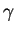
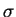
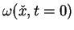
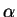
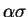
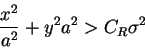

Next: Running BlobFlow
Up: Using BlobFlow
Previous: Environment variables
There are two groups of parameters for BlobFlow . The first group is the
physical description of the problem such as the fluid viscosity and the
initial conditions. The information in this file only describes the fluid
experiment, and has nothing to do with BlobFlow
, which is one means of
approximating the outcome of the experiment. BlobFlow performs some
elementary tests to make sure that the essential parameters are set
properly before the simulation begins, but this is by no means
bulletproof, and it is not recommended that this feature be used to
assure that control or simulation parameters are self-consistent.
This simulation description file has the general basic format
. The first group is the
physical description of the problem such as the fluid viscosity and the
initial conditions. The information in this file only describes the fluid
experiment, and has nothing to do with BlobFlow
, which is one means of
approximating the outcome of the experiment. BlobFlow performs some
elementary tests to make sure that the essential parameters are set
properly before the simulation begins, but this is by no means
bulletproof, and it is not recommended that this feature be used to
assure that control or simulation parameters are self-consistent.
This simulation description file has the general basic format
<paramname>: <paramvalue>
The required fields in the simulation description file are
- Viscosity - The kinematic viscosity of the fluid.
- FrameStep - This is the time interval over which one wishes observe
the fluid flow. BlobFlow
will write out the state of the system at
increments of this time interval.
- EndTime - The time at which the simulation ends. BlobFlow
always
assumes that the initial conditions refer to t=0.
- VtxInit - A file containing the initial conditions of the system.
This file should be a list of parameters for elliptical Gaussian basis
functions that describe the vorticity field when t=0. Each basis function
entry consists six numbers: x, y,

,

,
a,  .
Together, this list of blobs represents
.
Together, this list of blobs represents

in the form
described in (2.1).
WARNING: The way
you express your initial condition may affect the accuracy of your solution.
The control file includes parameters that govern the performance and
accuracy of the BlobFlow
simulation. It is important to know that the
accuracy of any fluid simulation depends up the exact solution. If this
reasoning sounds circular, it is! In practice, no one calculates a flow
once. Investigators calculate the flow, observe the results, identify
relevant features, try to recalculate the flow with finer parameters and so
on. The control file has the following required fields:
- TimeStep - This is the fundamental time integration interval as the
vortex blobs move and evolve in the flow.
- MaxOrder - This is the maximum order of the Adams-Bashforth time
integrator for the trajectories of the blobs. The lowest value is 1
and the greatest is 4. The user controls this parameter depending
upon the stability and accuracy needs in the simulation.
BlobFlow automatically runs a fourth order
startup procedure. However, when elements undergo adaptive refinement
(refer to the alpha parameter below), they immediately drop to first
order because the history of each of the children is unknown. Of
course, it would be desirable for every particle in the simulation to
remain at MaxOrder indefinitely, and this issue will be addressed in a
later version of BlobFlow.
- l2Tol - This is the maximum variable an elliptical Gaussian blob can
achieve before being split into thinner blobs. The square root of this
number is the maximum width a blob can achieve. This number can be likened
to the grid width of a finite difference calculation. Blobs naturally
become wider through viscous diffusion, and there is no way to
avoid this process. Unfortunately, the accuracy of the method is related to
the maximum blob width which is why core spreading methods were first
thought to be inconsistent. However, the term ``corrected'' in ECCSVM
refers to the fact that wide blobs are replaced with thinner blobs to
maintain accuracy.
- alpha - The parameter

governs the accuracy with which a blob
can be expressed as four thinner blobs. A blob of width
will be
replaced with two blobs of width

such that the new
configuration will look very much like the original blob. If you choose a
value of
that is close to one, the splitting process will be very
accurate and will happen frequently. This also means that the total number
of vortices, often referred to as the problem size, will grow quickly
and the computation will slow down.
- MergeStep - This is the time interval over which the merging
algorithm should be applied. If the MERGEDIAG compiler directive is
set, a file will be written before and after the merge
operation. The pre-merge configuration will be written to a file
called $(ECCSVM_BASENAME)_pmnnnn.vtx
where nnnn is
the frame number. MergeStep should be an integral multiple of
FrameStep and should not be less than FrameStep.
- ClusterRadius - The cluster radius is a heuristic technique for
excluding distant elements from consideration when considering a
merging event. Merging should only involve overlapping elements, but
it is not necessary to waste computational resources on error
estimates if one knows that the elements under consideration are far
from one another. If the base element to be merged is located at the
origin and the candidate element is located at position (x,y) in a
local coordinate system aligned with the base element's major and
minor axes. The candidate is automatically excluded if

C_R \sigma^2
\end{displaymath}">
where CR is the cluster radius, a2 is the base element's aspect
ratio, and
is the base element's width.
- MergeErrorEstimator - The merging algorithm used by BlobFlow
requires a means of estimating the impact of merging a cluster of
elements. Finding good merge estimates is still a fertile area for
investigator, and the user can choose from one of two available
methods. The first (paramvalue=1) estimates the merger-induced error
using a weighted average for distributional measurement. This
technique is fast and efficient for finding clusters, but the
distributional error will be insensitive to high frequency error
components. The second (paramvalue=2) uses a uniform error estimate,
but this estimate is by no means strict for large groups of elements.
Thus, it heavily penalizes most merge events except those involving pairs.
- MergeBudget - The problem size is controlled by merging overlapping
blobs. When blobs overlap substantially, the program can merge them into a
single blob if the induced error is sufficiently small. MergeBudget is an
error budget density for the simulation. Typically, this number should be
small relative to the magnitude of the vorticity field. Keep in mind
that this parameter value is an error density (vorticity per area)
because the ``support'' of the vorticity field changes with time.
- Mergea2Tol - This tolerance is not currently used, but used
to play a role in the uniform error estimator.
- MergeThTol - This tolerance is not currently used, but used
to play a role in the uniform error estimator.
- MergeMom3Wt - This tolerance is not currently used, but it may
play some role in future merging estimators if some type of weighted
sum between 3rd and 4th moments is used.
- MergeMom4Wt - This tolerance is not currently used, but it may
play some role in future merging estimators if some type of weighted
sum between 3rd and 4th moments is used.
Next: Running BlobFlow
Up: Using BlobFlow
Previous: Environment variables
Louis F Rossi
2001-08-01